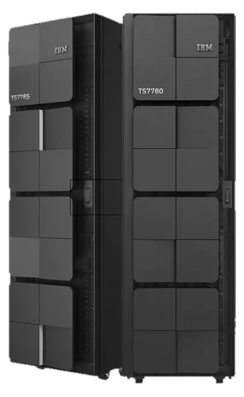
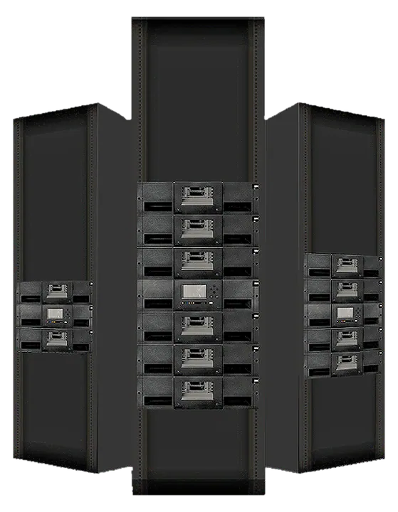

Tape library
IBM TS4500: up to 926 PB with LTO-10
A next-generation, high-density tape library scaling to 128 drives, with integrated fleet management for cyber-resilient archive and backup.
Learn more TrimbleGNSS · Total Stations · Scanning
TrimbleGNSS · Total Stations · Scanning DJI EnterpriseDrones · LiDAR · Dock
DJI EnterpriseDrones · LiDAR · Dock Esri ArcGISGIS & SDI
Esri ArcGISGIS & SDI Spectra GeospatialGNSS & Robotic Stations
Spectra GeospatialGNSS & Robotic Stations Nikon PrecisionOptical Survey
Nikon PrecisionOptical Survey US RadarGround Penetrating Radar
US RadarGround Penetrating Radar Seafloor SystemsHydrographic SurveyIBM Tape StorageEnterprise Data Archive
Seafloor SystemsHydrographic SurveyIBM Tape StorageEnterprise Data Archive XGRIDSHandheld SLAM LiDAR
XGRIDSHandheld SLAM LiDAR


A next-generation, high-density tape library scaling to 128 drives, with integrated fleet management for cyber-resilient archive and backup.
Learn moreFrom entry-level autoloaders to enterprise-scale libraries, sized and integrated by KACO Systems.
High-density, air-gapped storage that scales
Next-generation, high-density storage
High-density and easy to manage
Low-profile entry-level storage
Ultra-high-capacity cartridges for archive
Ultra-high capacity for cyber-resilient archiving
Mainframe and file-based archive
Virtual tape for mainframe systems
LTFS-based file archive
Explore IBM tape storage solutions for backup, archive and cyber resilience.
Learn moreSpecifications and capabilities of the IBM TS1170 tape drive.
Learn moreInstallation, planning and operation guides for the IBM TS4500 tape library.
Learn moreTape storage installed as part of a wider IT project: servers, cabling and networks.
Learn moreRansomware, hardware failure, and simple human error all threaten online data. We back every IBM tape deployment with sizing, installation, and ongoing infrastructure support.
Sizing and deployment of tape libraries and virtual tape systems as the last line of defence in your backup strategy.
Physically air-gapped tape cartridges that ransomware cannot reach — a critical layer beneath your online and cloud backups.
Tape storage installed as part of a wider IT infrastructure project — servers, structured cabling, and enterprise networks.
Our infrastructure engineers help you size the right IBM tape platform for your data volume, retention policy, and budget.